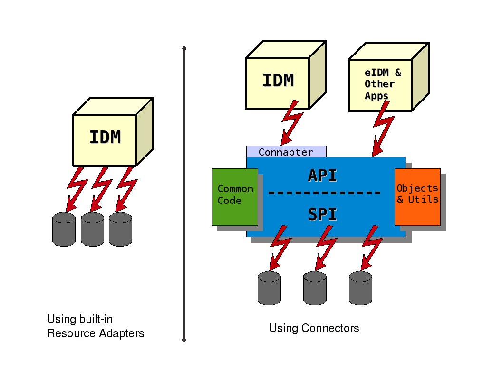

IdentityConnectors is designed to separate the implementation of an application from the dependencies of the application or system it is attempting to connect to. The IdentityConnectors framework provides a container to separate the Connector bundle from the application. The framework provides many common features that developers would otherwise need to implement on their own. For instance the framework can provide connection pooling, buffering, timeouts, and filtering. IdentityConnectors is separated into two parts: the API, from which applications can call Connectors, and the SPI, from which developers can create Connectors.
|  |
The Connector SPI is decomposed into several interfaces so that the Connector developer only has to implement the interfaces that the target application or system supports. The Connector API will still provide a consistent view regardless of the interfaces the Connector developer chooses to implement. The SPI is broken up into operations (create, update, delete, search, etc.), features, and requirements. The required interfaces include the Connector interface and the Configuration interface. These interfaces must be implemented in order for the API to understand which class contains the implementation of the configuration and which contains the implementation of the operations. The feature based interfaces at this time are the 'AttributeNormalizer' and 'PoolableConnector' interfaces. The operation interfaces determine the features the connector supports (such as Create, Delete, or simply Search). Please see the Javadoc for more details.
The Connector API is responsible for presenting a consistent view of a Connector regardless of the operations it has implemented. For the convenience of the SPI developer there are several common features that are provided right out of the box. For most of these features there is no need for the API developer to handle them, only configure them. Below is a list of features and their explanation. The main features/concepts of the API are as follows:
There are no declared exceptions on any of the interfaces for either the SPI or API. At first this may seem strange but there is a method to the madness. We concede the fact that at least one Connector implementation will throw a RuntimeException intentionally or not. Also we'd like to encourage the use of standard Java exceptions like IllegalArgumentException and IllegalStateException. Also for the benefit of the debugging and logging we like to encourage Connector developers to wrap their native exceptions in a RuntimeException so exception data is not lost.
Please see the Javadoc for more information.